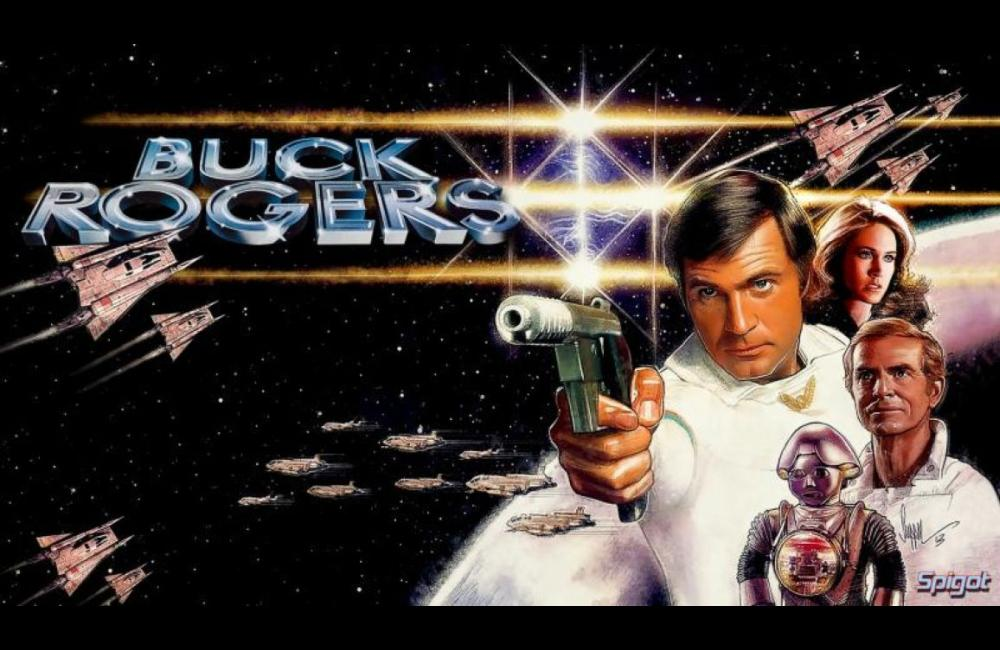

Buck Rogers is a fictional space opera character created by Philip Francis Nowlan in the novella Armageddon 2419 A.D., subsequently appearing in multiple media. In Armageddon 2419 A.D., published in the August 1928 issue of the pulp magazine, Amazing Stories, the character's given name was "Anthony". A sequel, The Airlords of Han, was published in the March 1929 issue.
Philip Nowlan and the syndicate John F. Dille Company, later known as the National Newspaper Syndicate, were contracted to adapt the story into a comic strip. After Nowlan and Dille enlisted editorial cartoonist Dick Calkins as the illustrator, Nowlan adapted the first episode from Armageddon 2419, A.D. and changed the hero's name from "Anthony" to "Buck". The strip made its first newspaper appearance on January 7, 1929. Later adaptations included a film serial, a television series (in which his first name was changed from "Anthony" to "William"), and other formats.
Nowlan was under contract with John F. Dille's National Newspaper Service, and when the author died in 1940, his wife fought Dille over intellectual property ownership. In 1942, the lawsuit was settled with Nowlan releasing claims and rights to Dille in exchange for $1,750.
In 2015 the Dille Family Trust is suing the Nowlan Family Trust, which remains unsettled as of 2018.
According to the lawsuit, an agent of the Nowlan family met with Syfy representatives this past December. As part of a pitch for a "Buck Rogers" series, the Nowlans provided a "series bible" setting forth characters and descriptions for potential use.
The Dille Family Trust claims that the pitch breached the 1942 agreement, and on Friday, a judge rejected a motion to dismiss the claim on the argument that the release of rights applied only to Nowlan's late wife.
The adventures of Buck Rogers in comic strips, movies, radio and television became an important part of American popular culture. This popular phenomenon paralleled the development of space technology in the 20th century and introduced Americans to outer space as a familiar environment for swashbuckling adventure.
Buck Rogers has been credited with bringing into popular media the concept of space exploration, following in the footsteps of literary pioneers such as Jules Verne, H. G. Wells and Edgar Rice Burroughs.
Born in 1898, Rogers is a veteran of the Great War (World War I) and by 1927 is working for the American Radioactive Gas Corporation investigating reports of unusual phenomena reported in abandoned coal mines near Wyoming Valley in Pennsylvania. On December 15, there is a cave-in while he is in one of the lower levels of a mine. Exposed to radioactive gas, Rogers falls into "a state of suspended animation, free from the ravages of catabolic processes, and without any apparent effect on physical or mental faculties". Rogers remains in suspended animation for 492 years.
Rogers awakens in 2419. Thinking that he has been asleep for just several hours, he wanders for a few days in unfamiliar forests (what had been Pennsylvania almost five centuries before). He notices someone clad in strange clothes, who is under attack. He defends the person, Wilma Deering, killing one of the attackers and scaring off the rest. On "air patrol", Deering was attacked by an enemy gang, the Bad Bloods, presumed to have allied themselves with the Hans.
Wilma takes Rogers to her camp, where he meets the bosses of her gang. He is invited to stay with them or leave and visit other gangs. They hope that Rogers' experience and knowledge he gained fighting in the First World War may be useful in their struggle with the Hans who rule North America from 15 great cities they established across the continent. They ignored the Americans who were left to fend for themselves in the forests and mountains as their advanced technology prevented the need for slave labor.
In the sequel, The Airlords of Han, six months have passed and the hunter is now the hunted. Rogers is now a gang leader and his forces, as well as the other American gangs, have surrounded the cities and are attacking constantly. The airlords are determined to use their fleet of airships to break the siege.
In 1933, Nowlan and Calkins co-wrote Buck Rogers in the 25th Century, a novella that retold the origin of Buck Rogers and also summarized some of his adventures. A reprint of this work was included with the first edition of the novel Buck Rogers: A Life in the Future (1995) by Martin Caidin.
In the 1960s, Nowlan's two novellas were combined by editor Donald A. Wollheim into one paperback novel, Armageddon 2419 A.D. The original 40-cent edition featured a cover by Ed Emshwiller.
In 1932, the Buck Rogers radio program, notable as the first science-fiction program on radio, hit the airwaves. It was broadcast in four separate runs with varying schedules. Initially broadcast as a 15-minute show on CBS in 1932, it was on a Monday through Thursday schedule. In 1936, it moved to a Monday, Wednesday, Friday schedule and went off the air the same year. Mutual brought the show back and broadcast it three days a week from April to July 1939 and from May to July 1940, a 30-minute version was broadcast on Saturdays. From September 1946 to March 1947, Mutual aired a 15-minute version on weekdays.
A ten-minute Buck Rogers film premiered at the 1933–1934 World's Fair in Chicago. John Dille Jr. (son of strip baron John F. Dille) starred in the film, which was called Buck Rogers in the 25th Century: An Interplanetary Battle with the Tiger Men of Mars.
A 12-part Buck Rogers serial film was produced in 1939 by Universal Pictures Company. Buck Rogers (Buster Crabbe) and his young friend Buddy Wade get caught in a blizzard and are forced to crash their airship in the Arctic wastes. In order to survive until they can be rescued, they inhale their supply of Nirvano gas which puts them in a state of suspended animation. When they are eventually rescued by scientists, they learn that 500 years have passed. It is now 2440. A tyrannical dictator named Killer Kane and his henchmen now run the world. Buck and Buddy must now save the world, and they do so with the help of Lieutenant Wilma Deering and Prince Tallen of Saturn.
The first version of Buck Rogers to appear on television debuted on ABC on April 15, 1950 and ran until January 30, 1951. There were a total of 36 black and white episodes in all (allowing for a 2-month summer hiatus). Unfortunately, no episodes of the show survive today.

Buck Rogers in the 25th Century is a 1979 American science fiction film directed by Daniel Haller. Starring Gil Gerard in the title role, it was produced by Glen A. Larson who co-wrote the screenplay with Leslie Stevens. Originally made as a television movie pilot, Universal Studios opted to release the film theatrically several months before the subsequent television series aired.
Good box office returns led NBC to commission a full series, which started in September 1979. Glen A. Larson produced the film and the first season of the eventual series.
The series starred Gil Gerard as Captain William "Buck" Rogers, a United States Air Force and NASA pilot who commands Ranger III, a space shuttle-like ship that is launched in 1987. When his ship flies through a space phenomenon containing a combination of gases, his ship's life support systems malfunction and he is frozen and left drifting in space for 504 years.
By the time he is revived, he finds himself in the 25th century. There, he learns that Earth was united following a devastating global nuclear war that occurred in the late 20th century, and is now under the protection of the Earth Defense Directorate, headquartered in New Chicago. The latest threat to Earth comes from the spaceborne armies of the planet Draconia, which is planning an invasion.